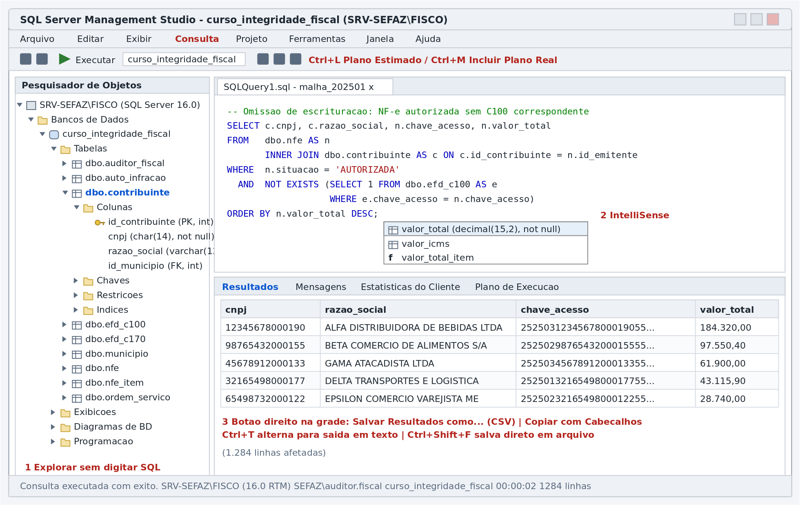
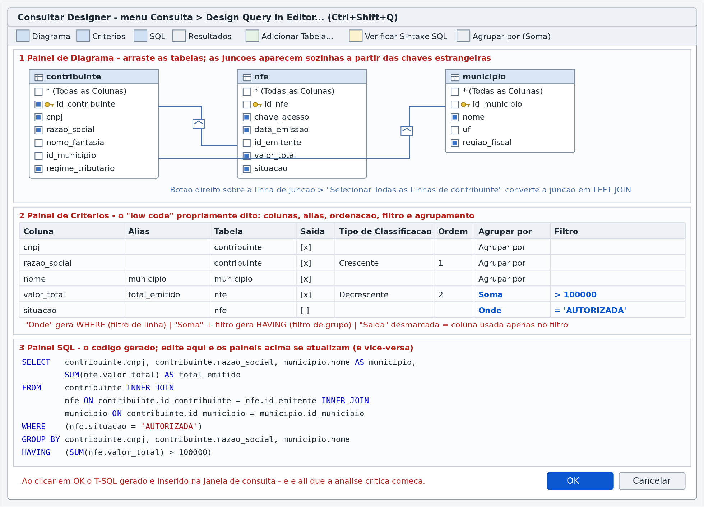
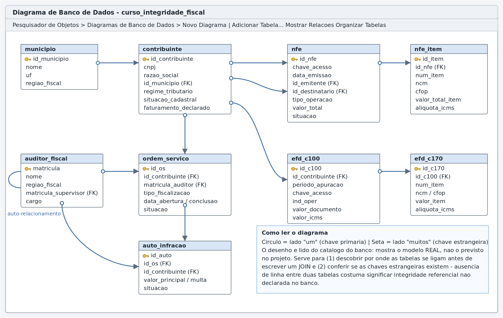
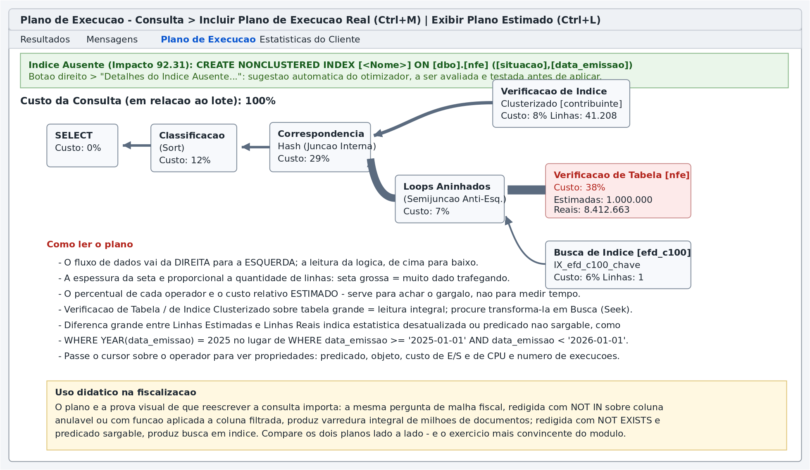
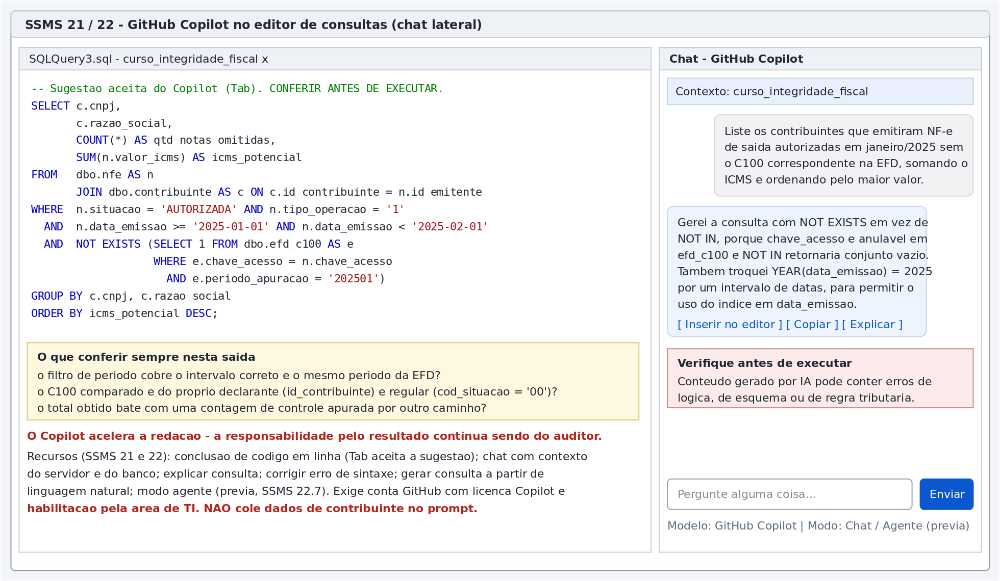
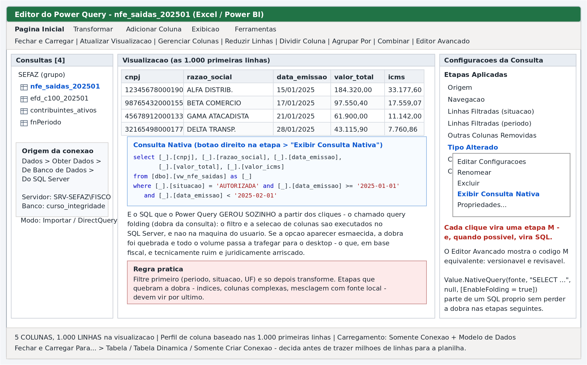
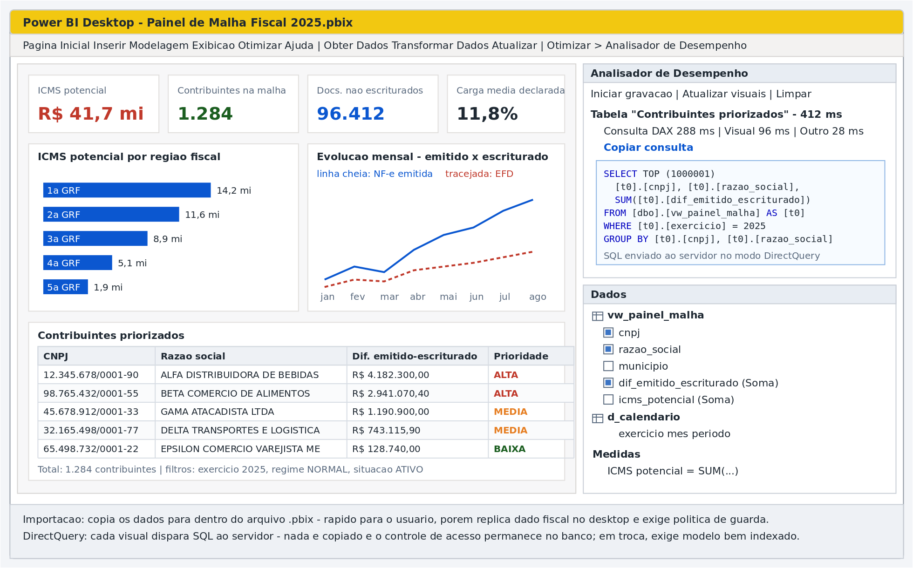
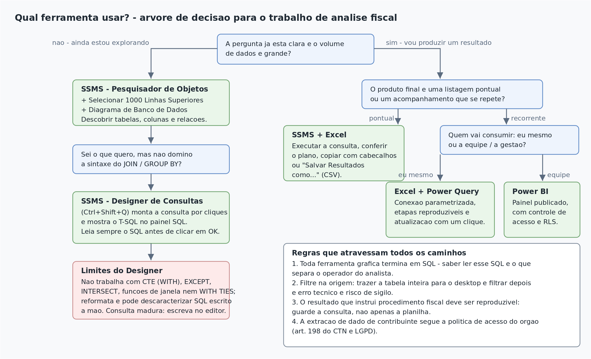

Curso de Banco de Dados Relacional aplicado à Fiscalização Tributária
Módulo 10 — Recursos low code do SQL Server Management Studio, do Excel/Power Query e do Power BI
SGBD: Microsoft SQL Server (T-SQL) — Banco: curso_integridade_fiscal
Sobre as figuras. As oito figuras deste módulo estão na pasta
figuras/, em.png(para inserir em documentos) e em.svg(vetorial, para projeção e impressão). São representações esquemáticas das telas, elaboradas para fins didáticos: reproduzem a disposição dos painéis e os pontos que interessam à aula, sem serem capturas do ambiente de produção — o que também evita expor dados de contribuintes em material de curso. O arquivogerar_figuras.pyreproduz e permite adaptar todas elas.
O Módulo 9 tratou da linguagem SQL: como escrever a consulta. Este módulo trata de como chegar até ela — e de como distribuir o resultado — usando os recursos gráficos que o SQL Server Management Studio (SSMS) e as ferramentas Microsoft de análise oferecem.
Há duas razões práticas para isso na administração tributária:
SELECT ... INNER JOIN ... GROUP BY ... HAVING.SELECT: ela vira listagem para a ordem de serviço, planilha para conferência, painel de acompanhamento para a gerência. Excel/Power Query e Power BI são o destino natural desse resultado — e ambos, sem que o usuário perceba, também geram SQL.Ao final do módulo, o participante deverá ser capaz de:
Módulos 1 a 9. É indispensável o domínio dos conceitos do Módulo 9 (junções, agregação, WHERE × HAVING, NULL), porque a interface gráfica não protege contra erro conceitual — ela apenas o produz mais depressa.
Toda ferramenta gráfica de análise termina em SQL. O Designer de Consultas escreve
SELECT. O Power Query, quando bem usado, traduz cliques emSELECT. O Power BI em DirectQuery enviaSELECTa cada visual. A diferença entre o operador e o analista não está em qual botão aperta, mas em saber ler o SQL que o botão gerou.
Três consequências práticas orientam todo o restante:
| Consequência | Implicação para o trabalho fiscal |
|---|---|
| O SQL gerado é sempre visível | Nenhuma consulta deve instruir procedimento fiscal sem que seu SQL tenha sido lido e compreendido |
| O SQL gerado é frequentemente subótimo | A GUI monta o que é sintaticamente correto, não o que é eficiente; para volume grande, revise |
| O SQL gerado é reproduzível | Guarde o script, não apenas a planilha: é o que permite refazer a apuração e sustentá-la em impugnação |

Figura 1 — Áreas da janela do SSMS. À esquerda, o Pesquisador de Objetos; ao centro, o editor de consultas com realce de sintaxe e IntelliSense; abaixo, o painel de resultados com suas abas (Resultados, Mensagens, Estatísticas do Cliente, Plano de Execução).
Quatro áreas concentram o trabalho:
| Área | Atalho | Para que serve na prática fiscal |
|---|---|---|
| Pesquisador de Objetos | F8 |
Descobrir tabelas, colunas, tipos, chaves e índices de uma base recebida |
| Editor de Consultas | Ctrl+N |
Escrever e executar T-SQL |
| Painel de Resultados | Ctrl+R alterna |
Conferir a saída, os planos e as estatísticas |
| Barra de status | — | Confirmar em qual servidor e em qual banco a consulta está rodando |
Hábito de segurança. Antes de executar qualquer coisa, confira na barra de status e no seletor da barra de ferramentas o servidor e o banco ativos. Rodar em produção uma consulta pensada para o ambiente de estudos é um acidente comum — e, quando a instrução não é um
SELECT, é um acidente caro.
O SSMS é distribuído separadamente do mecanismo de banco de dados e evolui em ritmo próprio:
| Versão | Marco relevante |
|---|---|
| 18.0 | Removeu os Diagramas de Banco de Dados |
| 18.1 | Restaurou os Diagramas de Banco de Dados após reação da comunidade |
| 21 | Primeira versão de 64 bits baseada no shell do Visual Studio 2022; introduziu o Copilot |
| 22.x | Baseada no Visual Studio 2026; conclusão de código e chat do Copilot em disponibilidade geral (22.4.1, março/2026) |
| 22.7 (jun/2026) | Formatação nativa de T-SQL, modo agente do Copilot e comparação gráfica de esquema, em prévia |
Os recursos low code clássicos — Designer de Consultas, Designer de Exibições, Diagramas, Modelos — permanecem disponíveis em todas essas versões. Confirme a versão instalada em Ajuda ▸ Sobre, porque a redação exata dos menus varia.
O Pesquisador expõe a estrutura completa do banco em árvore. Para o auditor que recebe uma base nova, a sequência produtiva é sempre a mesma:
PK, FK aparecem ao lado do nome);Dois recursos pouco conhecidos e muito úteis:
F7): abre um painel em forma de lista com colunas de metadados (data de criação, número de linhas, espaço em disco). Permite ordenar as tabelas por quantidade de linhas — a maneira mais rápida de descobrir onde estão os grandes volumes antes de escrever a primeira consulta.efd ou nfe economiza rolagem.Botão direito sobre uma tabela ▸ Script da Tabela como ▸ SELECT em / INSERT em / UPDATE em / CREATE em ▸ Nova Janela do Editor de Consultas.
O SSMS escreve o comando com todas as colunas nomeadas e qualificadas. É o caminho mais rápido para obter a lista completa de colunas sem digitação — e, portanto, para abandonar o SELECT * sem esforço:
-- Gerado por: Script da Tabela como > SELECT em
SELECT TOP (1000) [id_nfe]
,[chave_acesso]
,[numero]
,[serie]
,[data_emissao]
,[id_emitente]
,[id_destinatario]
,[tipo_operacao]
,[valor_total]
,[valor_icms]
,[situacao]
FROM [curso_integridade_fiscal].[dbo].[nfe];
O mesmo menu gera o CREATE TABLE completo — útil para documentar em um relatório de auditoria de sistemas a estrutura exata que existia na data da diligência.
SELECT TOP (1000). É a inspeção inicial de conteúdo: formatos de data, presença de nulos, padrões de preenchimento, uso de maiúsculas nas razões sociais.Recomendação para a SEFAZ. Em bases de produção, o perfil de acesso do auditor deve ser somente leitura. A grade editável não deve ser o caminho de correção de dado algum: correções se fazem por script versionado, com
BEGIN TRAN, conferência eCOMMIT— como visto no Módulo 8.
É o recurso low code central do SSMS: constrói consultas por arrastar-e-soltar e por marcação em grade.

Figura 2 — Os painéis do Designer de Consultas. No topo, o painel de diagrama com as tabelas e as junções; no meio, o painel de critérios; embaixo, o painel SQL com o código gerado.
| Caminho | Observação |
|---|---|
Menu Consulta ▸ Design Query in Editor… (Ctrl+Shift+Q) |
Principal. A consulta montada é inserida na janela do editor ao clicar em OK |
Selecionar um trecho de SQL no editor e pressionar Ctrl+Shift+Q |
Abre o designer já com a consulta selecionada carregada — excelente para entender uma consulta herdada visualmente |
| Grade de Editar 200 Linhas Superiores ▸ menu Consultar Designer ▸ Painel | Habilita os painéis Diagrama/Critérios/SQL sobre a tabela aberta |
| Novo Modo de Exibição (seção 6) | O mesmo designer, com destino em CREATE VIEW |
| Painel | Função | Gera |
|---|---|---|
| Diagrama | Escolher tabelas e definir junções | FROM e JOIN … ON |
| Critérios | Escolher colunas, alias, ordenação, agrupamento e filtros | SELECT, WHERE, GROUP BY, HAVING, ORDER BY |
| SQL | Exibir e editar o código | a consulta inteira |
| Resultados | Executar e conferir | — |
Os painéis são bidirecionais: editar o SQL atualiza o diagrama e a grade; alterar a grade reescreve o SQL. Alterne a exibição pelos quatro primeiros botões da barra do designer.
contribuinte, nfe e municipio. As junções aparecem automaticamente quando existem chaves estrangeiras declaradas — se não aparecerem, é sinal de que a FK não existe no banco (ver seção 7); nesse caso, arraste a coluna de uma tabela sobre a coluna correspondente da outra para criar a junção manualmente.total_emitido);ORDER BY;WHERE ou HAVING, conforme o caso.Ao acionar o botão Agrupar por (Σ), o painel de critérios ganha a coluna "Agrupar por", cujos valores se traduzem assim:
| Valor na coluna "Agrupar por" | T-SQL gerado | Efeito |
|---|---|---|
Agrupar por |
coluna entra no GROUP BY |
define o nível de agregação |
Soma, Média, Contagem, Mín, Máx, Contagem Distinta |
SUM(), AVG(), COUNT(), MIN(), MAX(), COUNT(DISTINCT …) |
agrega |
Onde |
condição vai para o WHERE |
filtra linhas, antes de agrupar |
Expressão |
expressão livre na lista de seleção | cálculos |
| filtro em coluna com função agregada | condição vai para o HAVING |
filtra grupos |
Esse quadro é a materialização visual da distinção WHERE × HAVING estudada no Módulo 9: na interface, é literalmente a diferença entre escrever o filtro em uma linha marcada como Onde e em uma linha marcada como Soma.
Clique com o botão direito sobre a linha de junção no diagrama:
| Opção marcada | Resultado |
|---|---|
| nenhuma | INNER JOIN |
Selecionar Todas as Linhas de contribuinte |
LEFT OUTER JOIN (preserva a tabela da esquerda) |
Selecionar Todas as Linhas de nfe |
RIGHT OUTER JOIN |
| ambas | FULL OUTER JOIN |
O losango sobre a linha muda de desenho conforme a escolha, indicando o lado preservado. É a forma mais rápida de montar o padrão de antijunção (LEFT JOIN + filtro É Nulo na chave da tabela da direita) que sustenta toda a malha fiscal de omissões.
Cuidado com o filtro na tabela opcional. Ao montar um
LEFT JOINpela interface e digitar um filtro sobre coluna da tabela da direita, o designer o coloca noWHERE— o que, como visto no Módulo 9 (seção 11.5), anula a junção externa. Nesse caso é preciso corrigir manualmente no painel SQL, movendo a condição para oON. É um dos pontos em que a interface leva ao erro se o conceito não estiver claro.
O construtor gráfico é uma ferramenta de aprendizagem e de montagem inicial, não um ambiente de produção. Ele não trabalha com:
WITH …), inclusive recursivas;UNION, INTERSECT, EXCEPT;ROW_NUMBER, SUM() OVER);TOP … WITH TIES, OFFSET/FETCH;DECLARE @periodo …), lote com GO, comentários que ele preserve fielmente;Além disso, ele reformata o SQL: identação, parênteses e quebras de linha são refeitos, e comentários podem ser perdidos. Abrir uma consulta madura no designer é um bom modo de descaracterizá-la.
Regra prática: monte no designer, refine no editor. Uma vez que a consulta ganhe CTE, função de janela ou operador de conjunto, ela deixou de ser objeto do construtor gráfico.
Pesquisador de Objetos ▸ Exibições ▸ botão direito ▸ Nova Exibição… abre o mesmo designer, com destino em CREATE VIEW.
Uma exibição (VIEW) é uma consulta nomeada e armazenada. Para a fiscalização, o valor é grande:
-- Exibição-padrão do curso, usada pelas ferramentas de análise
CREATE VIEW dbo.vw_nfe_saidas AS
SELECT n.id_nfe,
n.chave_acesso,
n.data_emissao,
n.valor_total,
n.valor_icms,
n.situacao,
c.id_contribuinte,
c.cnpj,
c.razao_social,
c.regime_tributario,
m.nome AS municipio,
m.regiao_fiscal
FROM dbo.nfe AS n
INNER JOIN dbo.contribuinte AS c ON c.id_contribuinte = n.id_emitente
INNER JOIN dbo.municipio AS m ON m.id_municipio = c.id_municipio
WHERE n.tipo_operacao = '1';
Exibições comuns não melhoram desempenho por si sós — são substituídas textualmente na consulta que as usa. Ganho de desempenho exige exibição indexada (
WITH SCHEMABINDING+ índice clusterizado), assunto de outro módulo.

Figura 3 — Diagrama do banco curso_integridade_fiscal. Cada caixa é uma tabela; cada linha, uma chave estrangeira, com o símbolo de chave no lado "um" e a seta no lado "muitos".
Pesquisador de Objetos ▸ Diagramas de Banco de Dados ▸ botão direito ▸ Novo Diagrama de Banco de Dados ▸ adicionar as tabelas de interesse.
Para o trabalho fiscal, o diagrama responde a duas perguntas que antecedem qualquer consulta:
JOIN serão necessários para ir de auto_infracao até municipio.id_contribuinte órfão em efd_c100, e que o cruzamento pode perder linhas silenciosamente. Achado desse tipo é, ele próprio, resultado de auditoria de sistemas.Observações operacionais:
Não é low code no sentido estrito, mas reduz drasticamente a digitação.
| Recurso | Como acionar | Uso na fiscalização |
|---|---|---|
| Pesquisador de Modelos | Ctrl+Alt+T |
Modelos prontos de CREATE, ALTER, backup etc. |
| Preencher parâmetros do modelo | Ctrl+Shift+M |
Abre caixa de diálogo para substituir os <parâmetro, tipo, valor> do modelo |
| Trechos (snippets) | Ctrl+K, Ctrl+X |
Inserir esqueletos de SELECT, INSERT, BEGIN TRAN |
| Circundar com | Ctrl+K, Ctrl+S |
Envolver a seleção em BEGIN…END, IF, WHILE |
| IntelliSense | automático; Ctrl+Espaço força |
Completar nomes de tabelas e colunas; Ctrl+Shift+R atualiza o cache local após um ALTER TABLE |
| Comentar / descomentar | Ctrl+K, Ctrl+C / Ctrl+K, Ctrl+U |
Testar variações da consulta |
| Formatar documento | Ctrl+K, Ctrl+D (SSMS 22.7+, prévia) |
Padronizar a identação do T-SQL |
| Analisar (sem executar) | Ctrl+F5 |
Validar sintaxe antes de rodar consulta pesada |
| Executar / Cancelar | F5 / Alt+Break |
— |
| Alternar resultado grade/texto/arquivo | Ctrl+D / Ctrl+T / Ctrl+Shift+F |
— |
Modelos personalizados são um instrumento de padronização institucional. Um modelo de "consulta de malha fiscal" com o cabeçalho de identificação (matrícula, número da OS, período, base legal) e a estrutura da consulta garante que toda extração fique documentada:
-- =========================================================
-- Ordem de Servico....: <numero_os, varchar(20), OS-2025-00000>
-- Auditor.............: <matricula, int, 0>
-- Periodo de apuracao.: <periodo, char(6), 202501>
-- Objeto..............: <objetivo, varchar(200), descrever a hipotese verificada>
-- Data de extracao....: (preenchida na execucao)
-- =========================================================
SELECT ...
| Necessidade | Caminho | Cuidado |
|---|---|---|
| Conferir na tela | Resultados em Grade (Ctrl+D) |
— |
| Colar em e-mail/documento | Botão direito ▸ Copiar com Cabeçalhos (Ctrl+Shift+C) |
Confira se o destinatário pode receber o dado |
| Gerar arquivo para o processo | Botão direito ▸ Salvar Resultados como… (CSV) | CSV não guarda tipos: valores e datas podem ser reinterpretados pelo Excel |
| Resultado grande e recorrente | Assistente de Importação e Exportação de Dados | Permite destino Excel, CSV ou outro banco |
| Dados para instruir auto de infração | Script de INSERT via Gerar Scripts ▸ Tipos de dados a serem gerados: Somente dados |
Produz evidência reprodutível |
| Publicar para a equipe | Exibição + Power BI (seção 13) | Aplique segurança em nível de linha |
Armadilha do CSV com CNPJ. Ao abrir no Excel um CSV com a coluna
cnpj, os zeros à esquerda desaparecem e a coluna vira número. Isso já invalidou muitos cruzamentos. Soluções: importar pelo Power Query definindo o tipo como texto (seção 12), ou exportar a coluna já formatada com máscara no próprio SQL.

Figura 4 — Plano de execução real, com sugestão de índice ausente. O fluxo de dados corre da direita para a esquerda; a espessura das setas é proporcional ao número de linhas.
| Recurso | Atalho | O que entrega |
|---|---|---|
| Exibir Plano de Execução Estimado | Ctrl+L |
Plano previsto, sem executar a consulta |
| Incluir Plano de Execução Real | Ctrl+M |
Plano com contagens reais, após executar |
| Estatísticas do Cliente | Shift+Alt+S |
Comparação entre execuções (tempo, pacotes, linhas) |
| Estatísticas de Consulta Dinâmica | menu Consulta | Animação do fluxo durante a execução — excelente em sala de aula |
O mínimo a saber ler:
YEAR(data_emissao) = 2025, LEFT(cnpj,8) = '12345678').Exercício demonstrativo clássico. Execute lado a lado, com
Ctrl+Mligado, a versão comNOT INsobre coluna anulável e a versão comNOT EXISTSda mesma consulta de omissão de escrituração (Módulo 9, seção 16.1). Compare custo relativo, operadores e número de leituras. Nada convence mais rápido sobre a importância da forma de escrever.

Figura 5 — Chat do Copilot ao lado do editor, com o contexto do servidor e do banco.
Tab aceita.SELECT herdado faz — útil para revisar consultas de terceiros.Disponibilidade: chat e conclusões em disponibilidade geral desde o SSMS 22.4.1 (março/2026); exige conta GitHub com licença Copilot e habilitação pela área de TI.
Prompts vagos produzem SQL genérico. Prompts que citam tabelas, colunas, período e regra produzem SQL utilizável:
"Usando
nfeeefd_c100, liste os contribuintes que emitiram NF-e de saída autorizadas em janeiro/2025 sem o C100 correspondente (mesmachave_acesso,periodo_apuracao= '202501',cod_situacao= '00'), somandovalor_icmse ordenando pelo maior valor."
id_emitente × id_destinatario); esquecimento de cod_situacao ou de situacao; uso de NOT IN onde caberia NOT EXISTS.O Power Query é o motor de conexão e transformação embutido no Excel (aba Dados) e no Power BI. É a ferramenta low code mais usada pelo auditor — e a menos compreendida, porque a maioria a utiliza sem saber que ela escreve SQL.

Figura 6 — Editor do Power Query. À esquerda, as consultas; ao centro, a visualização e o SQL gerado ("Consulta Nativa"); à direita, a lista de Etapas Aplicadas, onde o menu de contexto revela a opção Exibir Consulta Nativa.
Dados ▸ Obter Dados ▸ De Banco de Dados ▸ Do SQL Server
| Campo | Preenchimento | Observação |
|---|---|---|
| Servidor | SRV-SEFAZ\FISCO |
instância nomeada usa contrabarra |
| Banco de dados | curso_integridade_fiscal |
opcional, mas recomendável |
| Modo de conectividade | Importar ou DirectQuery | ver 13.1 |
| Instrução SQL (opcional) | um SELECT próprio |
ver a advertência em 12.3 |
| Credenciais | Windows (integrada) | preferível ao usuário e senha do banco |
Em seguida, o Navegador lista tabelas e exibições. Escolha vw_nfe_saidas (seção 6) e clique em Transformar Dados — e não em Carregar: o objetivo é filtrar antes de trazer.
Cada clique no editor vira uma Etapa Aplicada em linguagem M. Quando a etapa é traduzível para SQL, o Power Query a envia ao servidor em vez de executá-la na máquina do usuário. Esse mecanismo se chama query folding (dobra da consulta).
Para verificar: botão direito sobre a etapa ▸ Exibir Consulta Nativa.
| Situação | Significado |
|---|---|
| A opção aparece habilitada | a dobra está intacta até ali; o SQL exibido é o que será executado no servidor |
| A opção aparece esmaecida | a dobra foi quebrada em alguma etapa anterior; daí em diante tudo é processado no desktop |
Por que isso é decisivo em base fiscal: sem dobra, uma tabela de dezenas de milhões de itens de NF-e trafega inteira pela rede e é processada na estação de trabalho — lento, instável e, do ponto de vista de sigilo, indefensável.
Etapas que costumam preservar a dobra: filtrar linhas, remover/renomear colunas, alterar tipo, mesclar com outra consulta da mesma fonte, agrupar, ordenar.
Etapas que costumam quebrá-la: adicionar índice, coluna personalizada com função M sem equivalente em SQL, mesclar com fonte local (planilha), Table.Buffer.
Regra de ouro: filtre primeiro, transforme depois.
Digitar um SELECT no campo "Instrução SQL" da conexão funciona, mas historicamente interrompe a dobra: tudo o que vier depois é processado localmente. A alternativa, no Editor Avançado, é declarar explicitamente que a consulta nativa pode ser dobrada:
let
Fonte = Sql.Database("SRV-SEFAZ\FISCO", "curso_integridade_fiscal"),
Consulta = Value.NativeQuery(
Fonte,
"SELECT cnpj, razao_social, data_emissao, valor_total, valor_icms
FROM dbo.vw_nfe_saidas
WHERE situacao = 'AUTORIZADA'
AND data_emissao >= @ini AND data_emissao < @fim",
[ini = DataInicial, fim = DataFinal],
[EnableFolding = true]
)
in
Consulta
Note ainda a parametrização: DataInicial e DataFinal são parâmetros do Power Query (aba Página Inicial ▸ Gerenciar Parâmetros). Com eles, a mesma pasta de trabalho serve a qualquer período — basta alterar o parâmetro e atualizar, sem editar consulta alguma. É o que transforma uma extração pontual em rotina de acompanhamento.
| Problema | Prevenção |
|---|---|
| CNPJ perde zeros à esquerda | defina o tipo da coluna como Texto logo na primeira etapa de tipo |
| Chave de acesso vira notação científica | idem — 44 dígitos são texto, nunca número |
| Valores com separador trocado | confira a Localidade em Tipo Alterado ▸ Usando Localidade (Português-Brasil) |
| Perfil de coluna enganoso | o rodapé mostra estatística das 1.000 primeiras linhas; para conclusões, use Perfil de coluna baseado no conjunto de dados inteiro |
| Planilha gigante e lenta | carregue como Somente Criar Conexão + Modelo de Dados, e analise por Tabela Dinâmica |

Figura 7 — Painel de malha fiscal no Power BI Desktop, com o Analisador de Desempenho exibindo o SQL enviado ao servidor.
| Critério | Importação | DirectQuery |
|---|---|---|
| Onde ficam os dados | copiados para dentro do arquivo .pbix |
permanecem no SQL Server |
| Desempenho de interação | muito rápido (motor em memória) | depende do servidor e dos índices |
| Atualização | agendada / manual | a cada interação com o visual |
| Volume | limitado pela memória | adequado a volumes grandes |
| Sigilo fiscal | o arquivo passa a conter dados de contribuintes — exige política de guarda, criptografia e controle de compartilhamento | nada é copiado; o controle de acesso permanece no banco |
| Recursos de modelagem | completos | restrições em DAX e em transformações |
Recomendação para a SEFAZ. Para painéis institucionais com dado individualizado de contribuinte, prefira DirectQuery sobre exibições preparadas, combinado com segurança em nível de linha (RLS) por região fiscal ou por perfil. Importação fica reservada a agregados que não identifiquem o contribuinte.
Exibição ▸ Analisador de Desempenho ▸ Iniciar gravação ▸ Atualizar visuais. Cada visual passa a listar seu tempo; em DirectQuery, o link Copiar consulta entrega o SQL efetivamente enviado ao servidor. É o instrumento para (a) entender por que um visual está lento e (b) auditar exatamente o que o painel consulta.
vw_painel_malha) e dimensões (d_calendario, d_contribuinte), com relacionamentos.ICMS potencial, e não sum_dif_emitido_escriturado.| Ferramenta | Escreve SQL? | Melhor para | Limite principal |
|---|---|---|---|
| Pesquisador de Objetos | gera scripts | explorar estrutura, obter listas de colunas | não consulta dados |
| Selecionar 1000 Linhas | sim (TOP) |
primeira inspeção de conteúdo | amostra, não análise |
| Designer de Consultas | sim, e mostra | montar JOIN/GROUP BY sem decorar sintaxe |
sem CTE, conjunto, janela; reformata o código |
| Designer de Exibições | sim (CREATE VIEW) |
padronizar definições e simplificar o consumo | mesmas limitações do designer |
| Diagramas de BD | não | entender o modelo e as FKs | é superfície de edição: risco de alterar |
| Plano de execução | não | diagnosticar desempenho | exige interpretação |
| Copilot no SSMS | sim (por IA) | rascunhar e explicar consultas | pode errar; restrições de sigilo |
| Excel + Power Query | sim (dobra) | extração recorrente e parametrizada | quebra de dobra derruba o desempenho |
| Power BI | sim (DirectQuery) | painel para a equipe e a gestão | exige modelagem e governança |

Figura 8 — Árvore de decisão: qual ferramenta usar em cada situação.
A facilidade da interface gráfica amplia o alcance de quem a usa — não a sua competência legal. Cinco regras devem acompanhar todo o módulo:
.pbix importado e para o texto colado em um prompt de IA..sql ou a etapa M), a data e a hora da extração e o parâmetro de período. A planilha isolada não prova como o número foi obtido — e é o "como" que sustenta o auto de infração em impugnação.Resolva no ambiente do curso, sobre o banco
curso_integridade_fiscal. As respostas comentadas estão emgabarito_ferramentas_graficas_sql.md.
A1. Usando apenas o Pesquisador de Objetos (sem escrever SQL), descubra e anote: (a) quantas tabelas o banco possui; (b) quais colunas de nfe aceitam nulo; (c) quais índices existem em efd_c100.
A2. Pelo painel Detalhes do Pesquisador de Objetos (F7), ordene as tabelas por número de linhas e identifique as três maiores. Justifique, em duas linhas, por que essa informação deve preceder a redação de qualquer cruzamento.
A3. Gere, por menu de contexto, o script SELECT completo da tabela nfe_item e o CREATE TABLE de efd_c170. Explique uma situação de auditoria em que o segundo script é, ele próprio, evidência.
A4. Use Selecionar 1000 Linhas Superiores em contribuinte e relacione três características do preenchimento dos dados que só se percebem olhando (por exemplo: padronização de maiúsculas, presença de nulos, formato do CNPJ).
B1. No Designer (Ctrl+Shift+Q), monte uma consulta que liste CNPJ, razão social e município dos contribuintes ativos do regime normal, ordenada por razão social. Copie o SQL gerado e compare-o com o que você escreveria à mão: aponte duas diferenças de estilo.
B2. Acrescente a tabela nfe e produza, ainda pelo Designer: quantidade de notas autorizadas e soma do valor total por contribuinte, apenas para quem tem mais de 100 notas. Identifique, no painel de critérios, exatamente onde nasceu o GROUP BY e onde nasceu o HAVING.
B3. Converta a junção com nfe em junção externa pela interface, de modo que contribuintes sem nota apareçam. Registre qual opção do menu de contexto você marcou e qual cláusula mudou no SQL.
B4. Ainda no Designer, tente montar uma consulta que use EXCEPT entre as chaves de acesso de nfe e de efd_c100. Descreva o que acontece e explique por quê.
B5. Abra no Designer (selecionando o texto e pressionando Ctrl+Shift+Q) a consulta da seção 16.1 do Módulo 9 (omissão de escrituração, com NOT EXISTS). O que o Designer faz com ela? Que lição isso traz sobre o momento de abandonar o construtor gráfico?
B6. Monte pela interface um LEFT JOIN entre nfe e efd_c100 e adicione o filtro periodo_apuracao = '202501' na linha de efd_c100. Execute. O resultado é o esperado? Corrija no painel SQL e explique a correção.
C1. Crie, pelo Designer de Exibições, a exibição vw_autos_por_auditor com: matrícula e nome do auditor, região fiscal, quantidade de autos e valor total autuado. Salve e consulte-a com um SELECT simples.
C2. Monte um diagrama contendo contribuinte, nfe, nfe_item, efd_c100 e efd_c170. Identifique visualmente o caminho de junção entre nfe_item e efd_c170 e escreva o FROM correspondente.
C3. Verifique no diagrama se existe chave estrangeira entre efd_c100.chave_acesso e nfe.chave_acesso. Explique o significado prático da resposta para o cruzamento de malha fiscal.
D1. Com Ctrl+M ligado, execute as duas versões da consulta de contribuintes sem NF-e como destinatários — uma com NOT IN (protegida com IS NOT NULL) e outra com NOT EXISTS. Compare custo relativo, operadores e leituras.
D2. Execute SELECT ... WHERE YEAR(data_emissao) = 2025 e depois a versão com intervalo de datas. Identifique no plano a mudança de Verificação para Busca e explique o conceito de predicado sargable.
D3. Localize no plano uma sugestão de índice ausente. Redija um parágrafo, como se fosse para a área de TI, argumentando a favor ou contra a criação desse índice — considerando impacto em gravação e em espaço.
E1. Conecte o Excel a vw_nfe_saidas, filtre janeiro/2025 e situação AUTORIZADA pelo editor do Power Query e verifique, pela opção Exibir Consulta Nativa, o SQL gerado. Transcreva-o.
E2. Acrescente uma etapa que quebre a dobra (por exemplo, Adicionar Coluna de Índice) e verifique novamente. Descreva o que mudou e por que isso importa em uma tabela com dezenas de milhões de linhas.
E3. Parametrize a consulta com DataInicial e DataFinal e demonstre a troca de período sem editar a consulta.
E4. Importe a coluna cnpj sem definir o tipo como texto e observe o resultado. Corrija e explique o risco fiscal de não ter percebido o problema.
E5. No Power BI, construa um visual de tabela sobre vw_painel_malha, ative o Analisador de Desempenho e copie o SQL gerado. Compare o SQL do modo Importação com o do modo DirectQuery.
E6. Escreva meia página comparando Importação e DirectQuery do ponto de vista do sigilo fiscal, e recomende um dos dois para um painel com CNPJ e valores individualizados, justificando.
F1. Escolha uma das rotinas de cruzamento do Módulo 9 (seção 16) e descreva o percurso completo pelas ferramentas: onde começaria, o que faria em cada uma e como entregaria o resultado. Justifique cada escolha pela árvore de decisão da Figura 8.
F2. Um colega apresenta uma planilha com 4.200 contribuintes "omissos de EFD", produzida por Power Query, sem guardar a consulta. Liste cinco perguntas que você faria antes de instaurar procedimentos com base nela.
F3. Redija, em até uma página, um procedimento interno de uso de ferramentas gráficas de análise pela sua repartição, contemplando: perfis de acesso, guarda de arquivos extraídos, uso de assistentes de IA e reprodutibilidade das apurações.
MICROSOFT. Open the Query and View Designer (Visual Database Tools). Microsoft Learn. Disponível em: https://learn.microsoft.com/en-us/ssms/visual-db-tools/open-the-query-and-view-designer-visual-database-tools.
MICROSOFT. Work with Database Diagrams (Visual Database Tools). Microsoft Learn. Disponível em: https://learn.microsoft.com/en-us/sql/ssms/visual-db-tools/work-with-database-diagrams-visual-database-tools.
MICROSOFT. SSMS Query Editor. Microsoft Learn. Disponível em: https://learn.microsoft.com/en-us/ssms/f1-help/database-engine-query-editor-sql-server-management-studio.
MICROSOFT. What is GitHub Copilot in SQL Server Management Studio? Microsoft Learn. Disponível em: https://learn.microsoft.com/en-us/ssms/copilot/copilot-in-ssms-overview.
MICROSOFT. Get started — GitHub Copilot in SQL Server Management Studio. Microsoft Learn. Disponível em: https://learn.microsoft.com/en-us/ssms/github-copilot/get-started.
MICROSOFT. SQL Server Management Studio (SSMS) 22.4.1 and GitHub Copilot in SSMS (Generally Available). Microsoft Fabric Blog, mar. 2026. Disponível em: https://blog.fabric.microsoft.com/en/blog/sql-server-management-studio-ssms-22-4-1-and-github-copilot-in-ssms-generally-available.
MICROSOFT. Understanding query evaluation and query folding in Power Query. Microsoft Learn. Disponível em: https://learn.microsoft.com/en-us/power-query/query-folding-basics.
MICROSOFT. Query folding on native queries — Power Query. Microsoft Learn. Disponível em: https://learn.microsoft.com/en-us/power-query/native-query-folding.
MICROSOFT. Import data from a database using native database query. Microsoft Learn. Disponível em: https://learn.microsoft.com/en-us/power-query/native-database-query.
PETKOVIC, Dusan. Microsoft SQL Server 2019: A Beginner's Guide. 7. ed. New York: McGraw-Hill Education, 2020.
ELMASRI, Ramez; NAVATHE, Shamkant B. Fundamentals of Database Systems. 7. ed. Hoboken: Pearson, 2015.
BRASIL. Lei nº 5.172/1966 (Código Tributário Nacional), art. 198 — sigilo fiscal.
BRASIL. Lei nº 13.709/2018 (Lei Geral de Proteção de Dados Pessoais).
Material didático produzido para o Curso de Banco de Dados Relacional aplicado à Fiscalização Tributária — Secretaria de Estado da Fazenda da Paraíba.